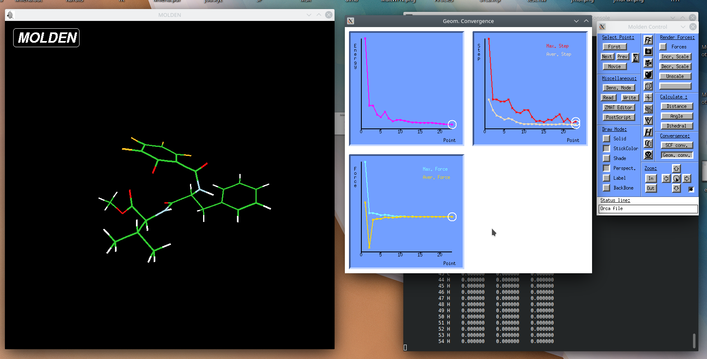

not changed to rocky yet
Visualization software for computational chemistry, biology and physics
Visualization mostly should be done on viz (Molden, Avogadro, JMol or VMD), but also short-time geometry checks are possible on base (Molden, Avogadro or JMol).
Short introduction
Accesse viz by remote access programs (more preferable) or by ssh protocol (less preferable):
ssh -X -Y -J UNI-ID@base.hpc.taltech.ee UNI-ID@viz
Load enviroment (gray or gray/spack/):
module load viz-spack module load jmol
Run visualization program (
jmol,molden,avogadro,vmdorrasmol):jmol job.xyz
Visualization long version
Molden
Molden is a nice program for visualization the results of quantum chemical calculations.
reads various input and output formats,
can be used as a Z-matrix editor,
shows optimization paths,
animates reaction paths and molecular vibrations,
displays molecular orbitals and electron densities.
Environment
On viz environment is set up by the commands:
module load viz-spack
module load molden
On base environment is set up by the commands:
module load green/all
module load molden
Running Molden
Molden is executed by command molden and reads .xyz, Gaussian and ORCA outputs, etc.
molden job.out

How to cite:
Avogadro
Avogadro is an advanced molecule editor and visualizer designed for computational chemistry, molecular modeling, bioinformatics, materials science, and related areas.
construction of molecules from fragments,
Z-matrix generation,
geometry optimization,
measurements,
performing a conformational search,
reading various input and output formats,
showing of molecular orbitals and electron density,
animation of reaction paths and molecular vibrations,
construction of IR spectra.
Environment
On viz there is a native install of Avogadro (no modules needed).
On base environment is set up by the commands:
module load green/all
module load Avogadro
Running Avogadro
Avogadro is executed by command avogadro and reads various input and output formats.
avogadro job.log
How to cite:
Avogadro 1.2.0 available at http://avogadro.cc/
JMol
JMol is a free, open source viewer of molecular structures that supports a wide range of chemical file formats.
visualization of animation,
visualization of vibration,
visualization of surfaces,
visualization of orbitals,
schematic shapes for secondary structures in biomolecules,
measurements.
Environment
On viz environment is set up by the commands:
module load green-spack
module load jmol
On base by the commands:
module load green-spack
module load jmol
Running JMol
JMol is executed by command jmol and reads .xyz, .pdb, .mol formats, etc.
jmol job.pdb
How to cite:
Jmol 14.31.0: an open-source Java viewer for chemical structures in 3D. Available at http://www.jmol.org/.
VMD
Visual Molecular Dynamics (VMD) is a molecular modelling and visualization program designed of biological systems. It supports over 60 file formats and has user-extensible graphical and text-based interfaces, as well as built-on standard Tcl/Tk and Python scripting languages. VMD provides a wide range of methods for visualizing and coloring molecules or atom subsets and an extensive selection syntax for subsets of atoms and has no limits on the number of molecules, atoms, residues or trajectory frames.
animation of MD trajectories,
analysis of MD trajectories,
analysis of sequences and structures of proteins and nucleic acids,
ability to export graphics to files that can be processed by ray tracing and image rendering packages,
ability to write molecular analysis programs in the Tcl language.
Environment
The first time use, the user has to read the license at https://www.ks.uiuc.edu/Research/vmd/current/LICENSE.html the software can only be used if the license is accepted! If you agree to the license, do:
touch ~/.licenses/vmd-accepted
after that it is needed to unload module and load it again by commands:
module unload VMD/1.9.3-text
module load VMD
if this is the first time you accept a license agreement, the following commands should be given:
mkdir .licenses
touch ~/.licenses/vmd-accepted
module unload VMD/1.9.3-text
module load VMD
On viz environment is set up by the commands:
module load viz
module load VMD
On base environment is set up by the commands:
module load green
module load VMD
User also needs to agree with the licenses, as described above.
Running VMD
VMD is executed by command vmd and reads various input and output formats.
vmd job.mol
How to cite:
VMD 1.9.4 available at http://www.ks.uiuc.edu/Research/vmd/
Interactive Molecular Dynamics - DOI:10.1145/364338.364398
Multiple Alignment Plugin - DOI:10.1093/bioinformatics/bti825
Tachyon ray tracing library - John Stone “An Efficient Library for Parallel Ray Tracing and Animation”, Computer Science Department, University of Missouri-Rolla, 1998
STRIDE Secondary Structure Prediction - DOI:10.1002/prot.340230412
SURF solvent accessible surface calculator - DOI:10.1109/38.310720
MSMS solvent excluded surface calculator - DOI:doi/10.1145/220279.220324
Speech and gesture recognition - DOI:10.1109/38.824531
RasMol
RasMol is a molecular graphics program for visualisation of proteins, nucleic acids and small molecules. RasMol provides a variety of colour schemes and molecule representations. In RasMol, different parts of the molecule may be represented and coloured independently of the rest of the molecule or displayed in several representations simultaneously, and atoms may also be labelled with arbitrary text strings. In addition, RasMol can read a prepared list of commands from a ‘script’ file.
Supported input file formats are .pdb, .mol2, .mdl, .msc, .xyz, .xmol, CHARMm and CIF formats files.
Finally, the rendered image may be written in a variety of formats such as GIF, PPM, BMP, PICT, Sun rasterfile or as a MolScript input script or Kinemage.
RasMol is available on viz just by common rasmol.
rasmol job.mol
How to cite:
Herbert J. Bernstein, 2009. RasMol, available at: http://www.rasmol.org/.